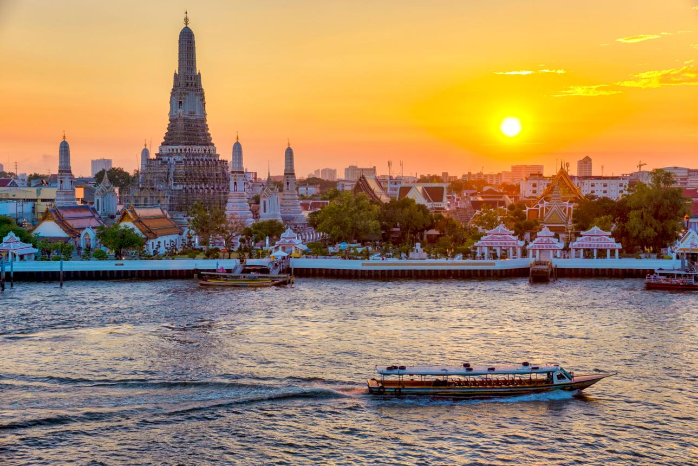
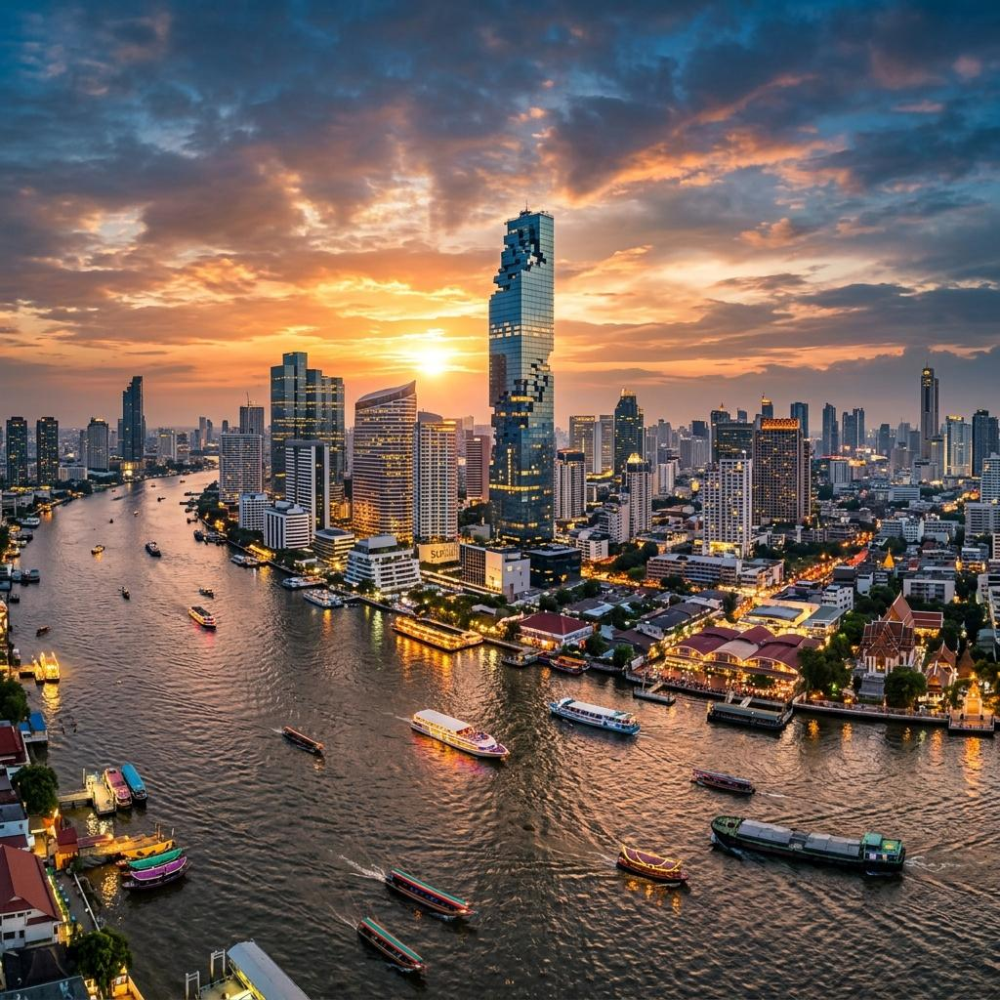
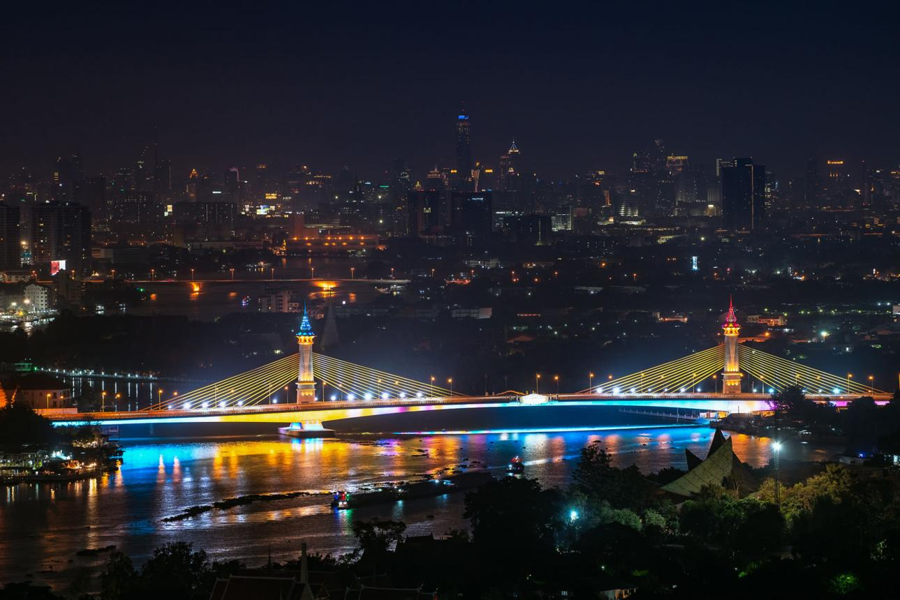
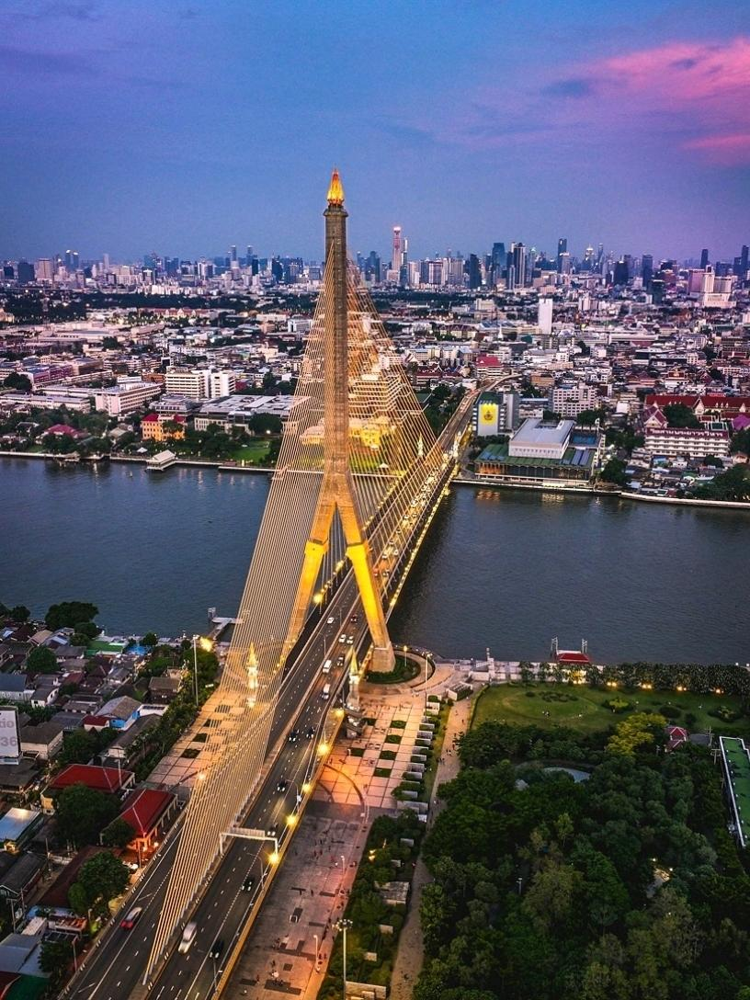
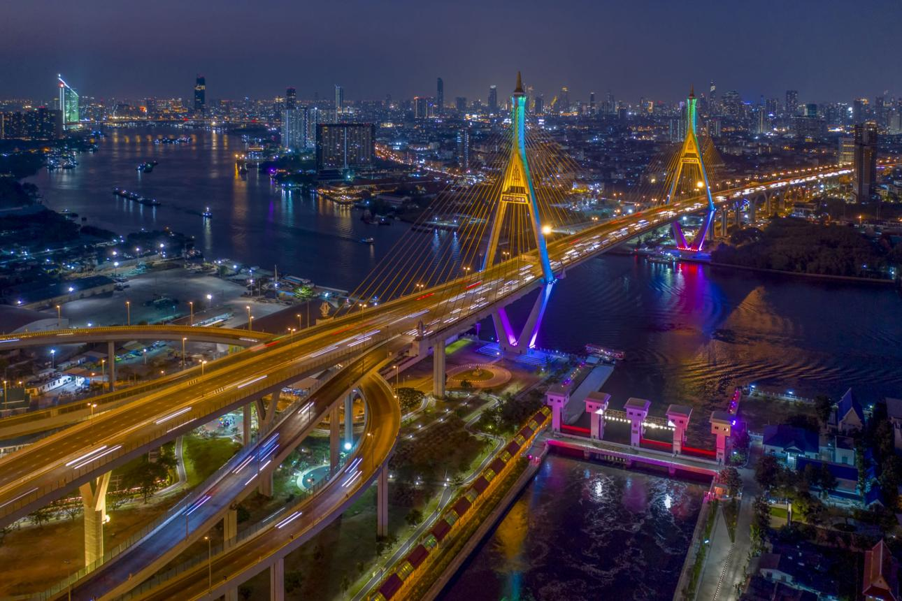
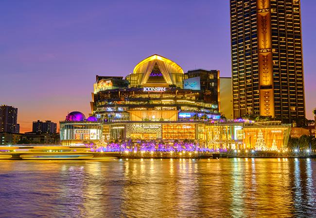

Река Чао Прайя — главная река Бангкока

Чао Прайя (Chao Phraya) — главная река Бангкока
и одна из важнейших частей жизни города. Она проходит через
исторический центр столицы, мимо королевских дворцов,
буддийских храмов, рынков и современных небоскрёбов.
Для туриста Чао Прайя — это не просто река, а отличный способ
увидеть Бангкок с воды. По ней ходят пассажирские лодки,
туристические корабли и паромы, соединяющие разные районы города.
Где находится
Река проходит через весь Бангкок с севера на юг, разделяя
исторические районы города.
Особенно интересен участок в центре, где находятся:
Для знакомства с рекой лучше всего отправляться именно
в центральную часть Бангкока.
Стоимость посещения
Посещение реки — бесплатное.
Платить нужно только за конкретный вид транспорта или экскурсию.
Например, можно воспользоваться обычным речным транспортом,
туристической лодкой или заказать частную прогулку.
Стоимость зависит от выбранного варианта и маршрута,
поэтому цены лучше проверять непосредственно перед поездкой.
Как добраться
На речном автобусе
Самый интересный вариант — воспользоваться
Chao Phraya Express Boat. Это обычный общественный
транспорт, который позволяет перемещаться по реке между
различными пирсами.
Для туриста особенно удобен пирс
Sathorn (Central Pier), расположенный возле станции
BTS Saphan Taksin. Отсюда можно отправиться вверх
или вниз по реке и выйти возле интересующей достопримечательности.
BTS + лодка
Один из наиболее удобных маршрутов:
- BTS Saphan Taksin;
- пирс Sathorn;
- лодка;
- нужный пирс.
Например, можно доехать до района Ват Аруна,
а затем продолжить путешествие пешком.
Пешком
Если вы уже гуляете возле
Ват Пхо,
Королевского дворца
или Ват Аруна,
до реки можно добраться буквально за несколько минут.
Что посмотреть на реке
Главное преимущество Чао Прайи — возможность увидеть сразу
множество достопримечательностей во время одной поездки.
Ват Арун

Одна из самых узнаваемых картин Бангкока — Ват Арун,
возвышающийся над рекой. С воды особенно хорошо видно
центральный пранг храма, покрытый фарфоровой мозаикой.
Лучше всего храм выглядит ближе к закату, когда солнце
освещает его фасад.
Королевский дворец

С реки можно увидеть районы, окружающие исторический центр
Бангкока и Большой дворец. Сам дворец расположен немного
в стороне от берега, но его посещение легко объединить
с речной прогулкой.
Традиционные дома на берегу

Это одна из самых интересных особенностей Чао Прайи.
За современными небоскрёбами и туристическими
достопримечательностями скрываются обычные жилые районы
со старыми деревянными домами, небольшими храмами
и лодочными причалами.
Поездка по реке позволяет увидеть
совершенно другой Бангкок, который
практически невозможно заметить во время обычной поездки
по дорогам.
Мосты Бангкока



Через Чао Прайю проходит множество мостов.
Один из самых узнаваемых — мост Рамы VIII
с огромной наклонной опорой и единственным основным пилоном.
Ночью мост красиво подсвечивается и является популярным
объектом для фотографирования.
ICONSIAM



ICONSIAM — огромный современный торговый
комплекс прямо на берегу Чао Прайи.
Здесь можно совместить прогулку по реке с ресторанами,
магазинами и видом на вечерний Бангкок. Особенно интересно
приезжать сюда после заката.
Что находится рядом
Чао Прайя проходит через огромное количество интересных мест,
поэтому её можно объединить практически с любым маршрутом
по историческому Бангкоку.
Ват Арун
Один из главных храмов города находится непосредственно
на берегу. Можно приехать сюда на лодке, посетить храм,
а затем переправиться через реку к Ват Пхо.
Ват Пхо
Расположен на противоположном берегу от Ват Аруна.
Отсюда удобно начать маршрут:
- Ват Пхо;
- паром через Чао Прайю;
- Ват Арун.
Королевский дворец
Находится недалеко от реки и легко объединяется
с посещением Ват Пхо.
Каосан Роуд
От центральных пирсов можно добраться до района Каосан
пешком или на такси.
Важное для туристов
Не путайте обычные лодки с туристическими.
На реке работает несколько видов транспорта. Туристические
лодки обычно стоят дороже, зато могут быть удобнее
для обзорной поездки.
Следите за направлением движения.
Перед посадкой убедитесь, что лодка идёт в нужную вам сторону.
Не садитесь в первую попавшуюся частную лодку.
Если вам предлагают индивидуальную прогулку, заранее
уточните полную стоимость, продолжительность и маршрут.
Не обязательно брать дорогую экскурсию.
Для первого знакомства с Чао Прайей достаточно обычной
пассажирской лодки — это одновременно транспорт
и небольшая обзорная экскурсия.
Лучшее время — ближе к вечеру.
Можно сначала увидеть храмы при дневном свете, а затем
посмотреть на реку и Бангкок во время заката и после
включения подсветки.
Как лучше провести время на Чао Прайе
Для туриста оптимальный вариант — не просто прийти к реке,
а использовать её как часть маршрута.
Например:
- 15:00 — Ват Пхо;
- 16:30 — переправа через Чао Прайю;
- 16:40 — Ват Арун;
- 18:00 — поездка на лодке по реке;
- 18:30 — закат над Чао Прайей;
- 19:00 — ICONSIAM или возвращение в исторический центр;
- 20:00 — Каосан Роуд.
Так за один день можно увидеть храмы, старый Бангкок,
реку, современные районы и знаменитую ночную жизнь города.
Что запомнить
Чао Прайя — это транспортная артерия и одна из главных
достопримечательностей Бангкока одновременно. Если Ват Арун
показывает исторический и религиозный Бангкок, а Каосан —
туристический и ночной, то поездка по Чао Прайе позволяет
увидеть, как все эти совершенно разные части города
существуют рядом друг с другом.